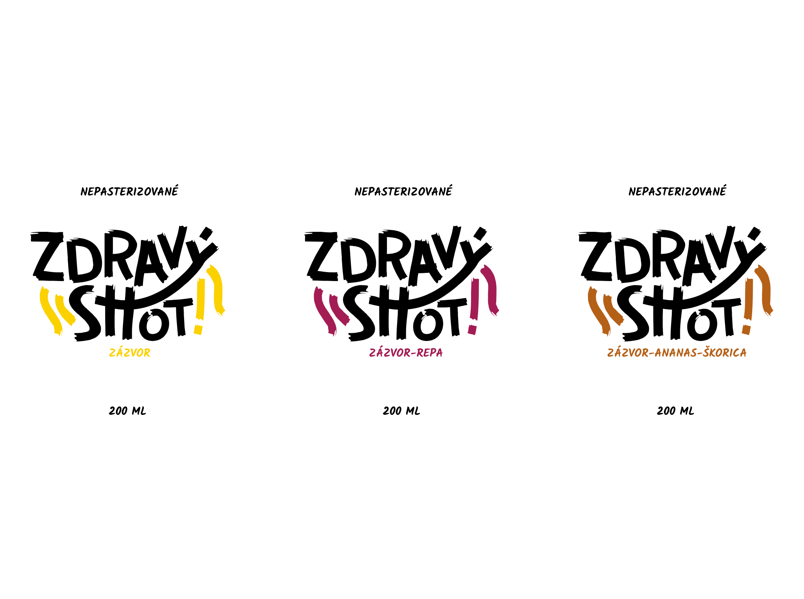
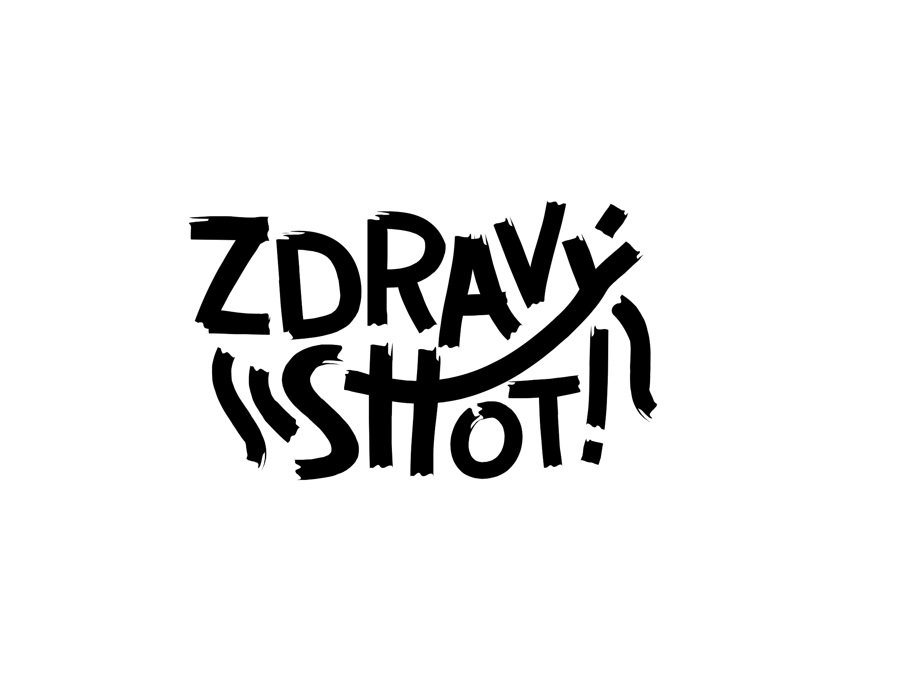
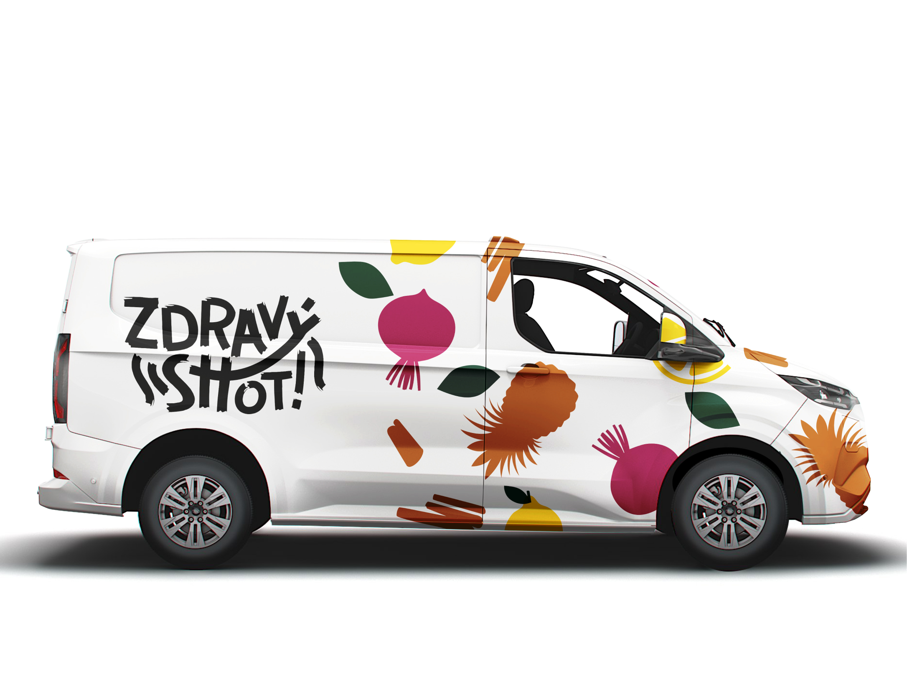

Zdravý Shot, 2024
A visual identity for a brand of healthy drinks focused on 100% natural, handcrafted energy and
immune-boosting shots made from local ingredients. The concept is based on the contrast between boldness
and freshness.
The robust sans-serif logotype with a handwritten feel is complemented by organic illustrations
that evoke playfulness and movement. The color palette helps identify different flavours, while remaining consistent.
The overall visual style remains clean, minimalist, and works well in both online and offline environments.
Created at Wink&Nod digital agency.




